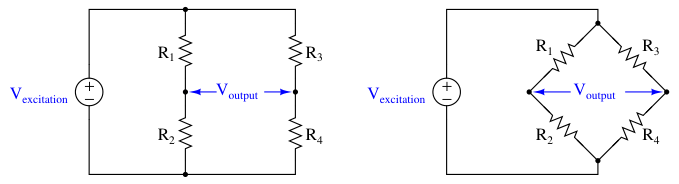
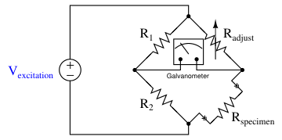
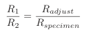
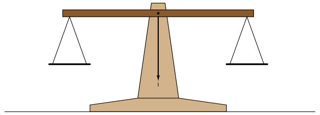
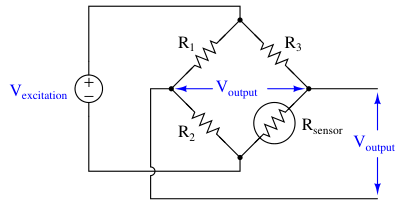
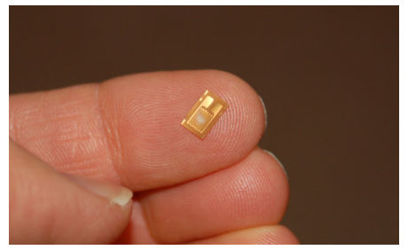
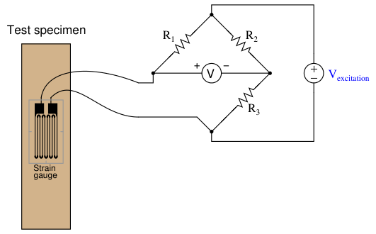
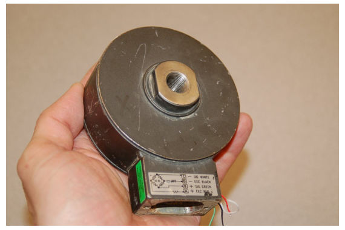
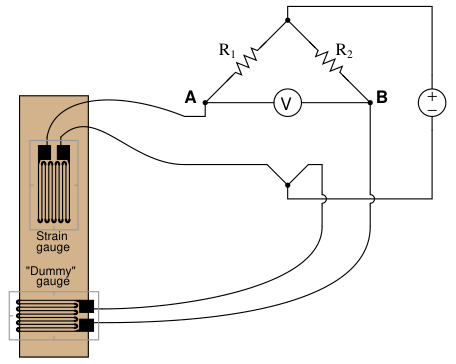
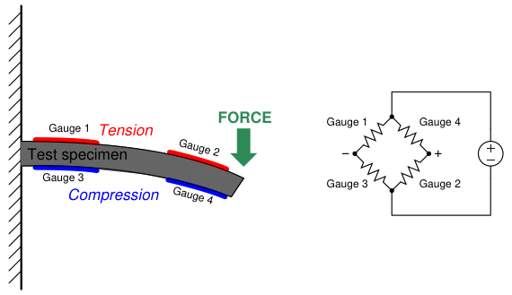

The original, as published: Tony R. Kuphaldt, Lessons In Industrial Instrumentation, Bridge circuits. CC BY 4.0, https://creativecommons.org/licenses/by/4.0/. Imported as published, from https://www.ibiblio.org/kuphaldt/socratic/sinst/book/liii.pdf https://www.ibiblio.org/kuphaldt/socratic/sinst/book/liii.pdf
A bridge circuit is basically a pair of voltage dividers where the circuit output is taken as the difference in potential between the two dividers. Bridge circuits may be drawn in schematic form in an H-shape or in a diamond shape, although the diamond configuration is more common:

The voltage source powering the bridge circuit is called the excitation source. This source may be DC or AC depending on the application of the bridge circuit. The components comprising the bridge need not be resistors, either: capacitors, inductors, lengths of wire, sensing elements, and other component forms are possible, depending on the application. Two major applications exist for bridge circuits, which will be explained in the following subsections.
Bridge circuits may be used to test components. In this capacity, one of the “arms” of the bridge circuit is comprised of the component under test, while at least one of the other “arms” is made adjustable. The common Wheatstone bridge circuit for resistance measurement is shown here:

Fixed resistors R1 and R2 are of precisely known value and high precision. Variable resistor Radjust has a labeled knob allowing for a person to adjust and read its value to a high degree of precision. When the ratio of the variable resistance to the specimen resistance equals the ratio of the two fixed resistors, the sensitive galvanometer will register exactly zero volts regardless of the excitation source’s value. This is called a balanced condition for the bridge circuit:

When the two resistance ratios are equal, the voltage drops across the respective resistances will also be equal. Kirchhoff’s Voltage Law declares that the voltage differential between two equal and opposite voltage drops must be zero, accounting for the meter’s indication of balance.
It would not be inappropriate to relate this to the operation of a laboratory balance-beam scale, comparing a specimen of unknown mass against a set of known masses. In either case, the instrument is merely comparing an unknown quantity against an (adjustable) known quantity, indicating a condition of equality between the two:

Many legacy instruments were designed around the concept of a self-balancing bridge circuit, where an electric servo motor drove a potentiometer to achieve a balanced condition against the voltage produced by some process sensor. Analog electronic paper chart recorders often used this principle. Almost all pneumatic process instruments use this principle to translate the force of a sensing element into a variable air pressure. Modern bridge circuits are mostly used in laboratories for extremely precise component measurements. Very rarely will you encounter a Wheatstone bridge circuit used in the process industries.
A different application for bridge circuits is to convert the output of an electrical sensor into a voltage signal representing some physical measurement. This is by far the most popular use of bridge measurement circuits in industry, and here we see the same circuit used in an entirely different manner from that of the balanced Wheatstone bridge circuit.

Here, the bridge will be balanced only when Rsensor is at one particular resistance value. Unlike the Wheatstone bridge, which serves to measure a component’s value when the circuit is balanced, this bridge circuit will probably spend most of its life in an unbalanced condition. The output voltage changes as a function of sensor resistance, which makes that voltage a reflection of the sensor’s physical condition. In the above circuit, we see that the output voltage increases (positive on the top wire, negative on the bottom wire) as the resistance of Rsensor increases.
One of the most common applications for this kind of bridge circuit is in strain measurement, where the mechanical strain of an object is converted into an electrical signal. The sensor used here is a device known as a strain gauge: a folded wire designed to stretch and compress with the object under test, altering its electrical resistance accordingly. Strain gauges are typically quite small, as shown by this photograph:

Strain gauges are useful when bonded to metal specimens, providing a means of electrically sensing the strain (“stretching” or “compressing” of that specimen). The following bridge circuit is a typical application for a strain gauge:

When the specimen is stretched along its long axis, the metal wires in the strain gauge stretch with it, increasing their length and decreasing their cross-sectional area, both of which work to increase the wire’s electrical resistance. This stretching is microscopic in scale, but the resistance change is measurable and repeatable within the specimen’s elastic limit. In the above circuit example, stretching the specimen will cause the voltmeter to read upscale (as defined by the polarity marks). Compressing the specimen along its long axis has the opposite effect, decreasing the strain gauge resistance and driving the meter downscale. Strain gauges are used to precisely measure the strain (stretching or compressing motion) of mechanical elements. One application for strain gauges is the measurement of strain on machinery components, such as the frame components of an automobile or airplane undergoing design development testing. Another application is in the measurement of force in a device called a load cell. A “load cell” is comprised of one or more strain gauges bonded to the surface of a metal structure having precisely known elastic properties. This metal structure will stretch and compress very precisely with applied force, as though it were an extremely stiffspring. The strain gauges bonded to this structure measure the strain, translating applied force into electrical resistance changes.
You can see what a load cell looks like in the following photograph:

Strain gauges are not the only dynamic element applicable to bridge circuits. In fact, any resistance-based sensor may be used in a bridge circuit to translate a physical measurement into an electrical (voltage) signal. Thermistors (changing resistance with temperature) and photocells (changing resistance with light exposure) are just two alternatives to strain gauges. It should be noted that the amount of voltage output by this bridge circuit depends both on the amount of resistance change of the sensor and the value of the excitation source. This dependency on source voltage value is a major difference between a sensing bridge circuit and a Wheatstone (balanced) bridge circuit. In a perfectly balanced bridge, the excitation voltage is irrelevant: the output voltage is zero no matter what source voltage value you use. In an unbalanced bridge circuit, however, source voltage value matters! For this reason, these bridge circuits are often rated in terms of how many millivolts of output they produce per volt of excitation per unit of physical measurement (microns of strain, newtons of stress, etc.).
An interesting feature of a sensing bridge circuit is its ability to cancel out unwanted variables. In the case of a strain gauge, for example, mechanical strain is not the only variable affecting gauge resistance. Temperature also affects gauge resistance. Since we do not wish our strain gauge to also act as a thermometer (which would make measurements very uncertain – how would we differentiate the effects of changing temperature from the effects of changing strain?), we must find some way to nullify resistance changes due solely to temperature, such that our bridge circuit will respond only to changes in strain. The solution is to creatively use a “dummy” strain gauge as another arm of the bridge:

The “dummy” gauge is attached to the specimen in such a way that it maintains the same temperature as the active strain gauge, yet experiences no strain. Thus, any difference in gauge resistances must be due solely to specimen strain. The differential nature of the bridge circuit naturally translates the differential resistance of the two gauges into one voltage signal representing strain. If thermistors are used instead of strain gauges, this circuit becomes a differential temperature sensor. Differential temperature sensing circuits are used in solar heating control systems, to detect when the solar collector is hotter than the room or heat storage mass being heated. Sensing bridge circuits may have more than one active “arm” as well. The examples you have seen so far in this section have all been quarter-active bridge circuits. It is possible, however, to incorporate more than one sensor into the same bridge circuit. So long as the sensors’ resistance changes are coordinated, their combined effect will be to increase the sensitivity (and often the linearity as well) of the measurement.
For example, full-active bridge circuits are sometimes built out of four strain gauges, where each strain gauge comprises one arm of the bridge. Two of the strain gauges must compress and the other two must stretch under the application of the same mechanical force, in order that the bridge will become unbalanced with strain:

Not only does a full-active bridge circuit provide greater sensitivity and linearity than a quarteractive bridge, but it also naturally provides temperature compensation without the need for “dummy” strain gauges, since the resistances of all four strain gauges will change by the same proportion if the specimen temperature changes.